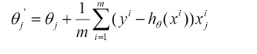
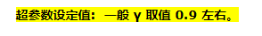
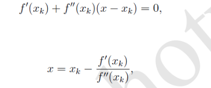
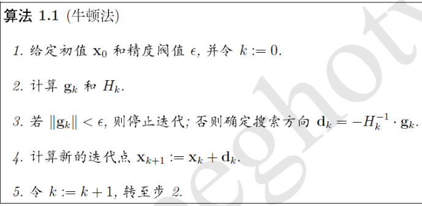
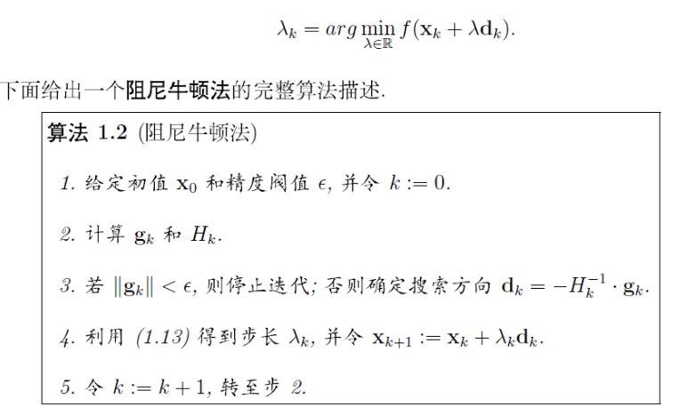
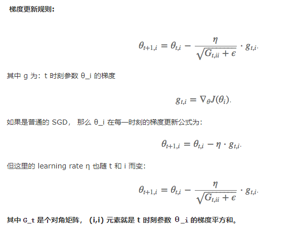
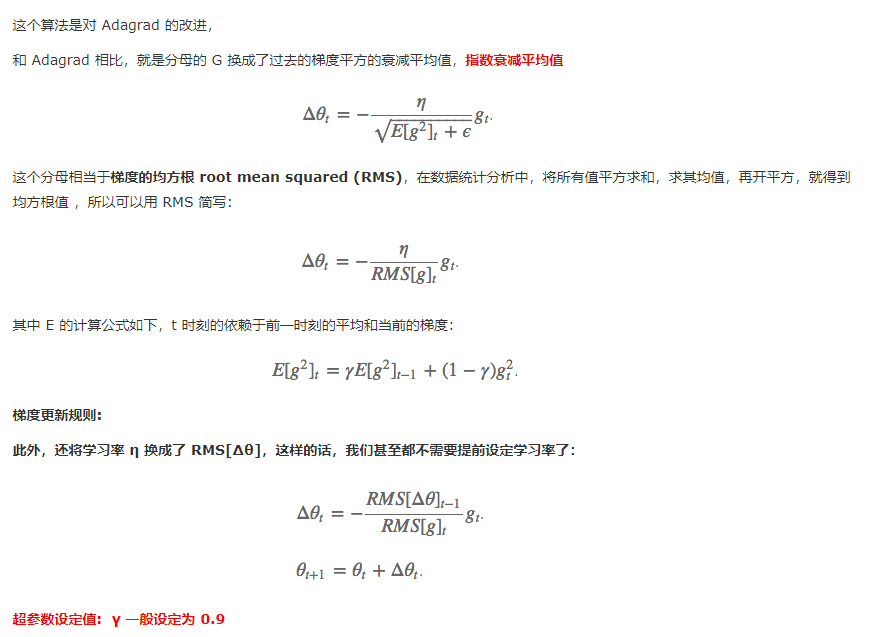
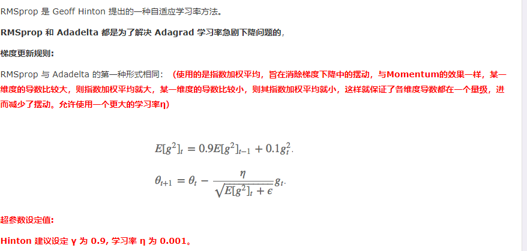
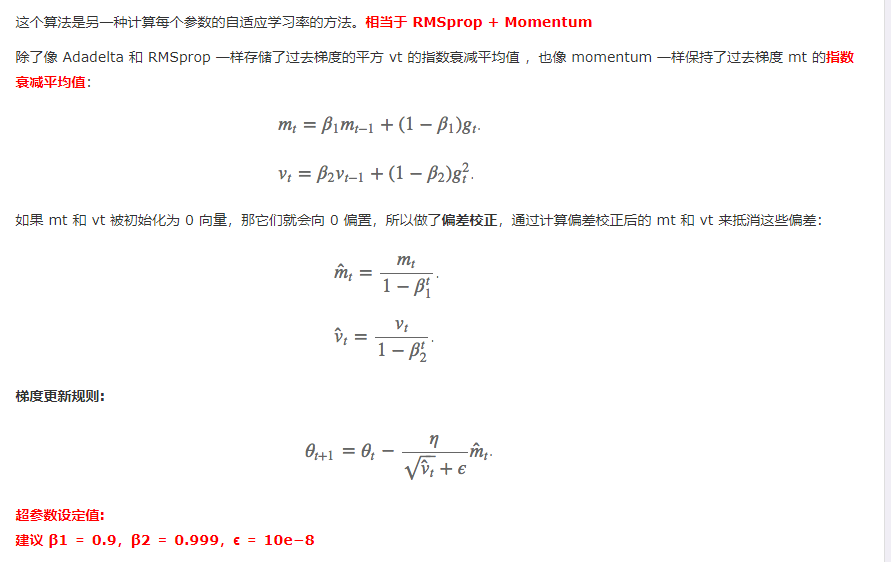
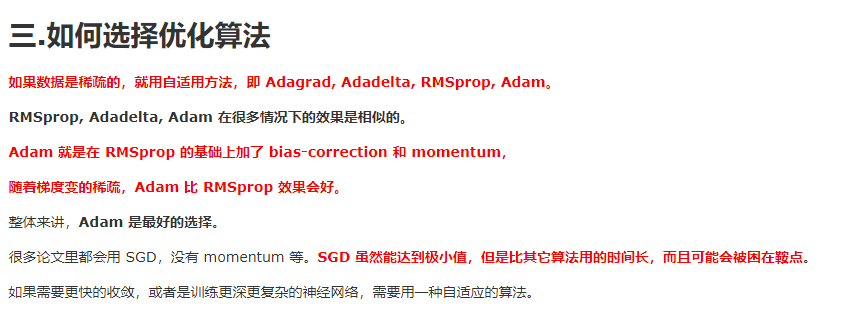

【统计学习】Common optimization method(常见优化方法)
Gradient Descent
Batch Gradient Descent
(1)First,calculate partial derivation $J(\theta)$ with respect to $\theta$
(2)Update

It will get a global optimum solution.But each iteration it will use all the data of training dataset.This will be very slow if m very big
Stochastic Gradient Descent (SGD)
和 BGD 的一次用所有数据计算梯度相比，SGD 每次更新时对每个样本进行梯度更新，对于很大的数据集来说，可能会有相似的样本，这样 BGD 在计算梯度时会出现冗余，而 SGD 一次只进行一次更新，就没有冗余，而且比较快，并且可以新增样本。
for i in range(nb_epochs): #迭代
np.random.shuffle(data) #随机打乱
for example in data: #迭代每条数据
params_grad = evaluate_gradient(loss_function, example, params) #评估梯度
params = params - learning_rate * params_grad
Mini-Batch Gradient Descent （MBGD）
MBGD 每一次利用一小批样本，即 n 个样本进行计算，这样它可以降低参数更新时的方差，收敛更稳定，另一方面可以充分地利用深度学习库中高度优化的矩阵操作来进行更有效的梯度计算。
for i in range(nb_epochs):
np.random.shuffle(data)
for batch in get_batches(data, batch_size=50): #取出50个数据作为一批
params_grad = evaluate_gradient(loss_function, batch, params)
params = params - learning_rate * params_grad
Momentum
牛顿法是一种在实数域和复数域上近似求解方程的方法。方法使用函数f (x)的泰勒级数的前面几项来寻找方程f (x) = 0的根。牛顿法最大的特点就在于它的收敛速度很快。




Quasi-Newton Methods

Nesterov Accelerated Gradient
Adagrad

Adadelta

RMSprop

Adam
一般Adam最优，不仅存储过去梯度平方，还存储过去梯度

算法选择
